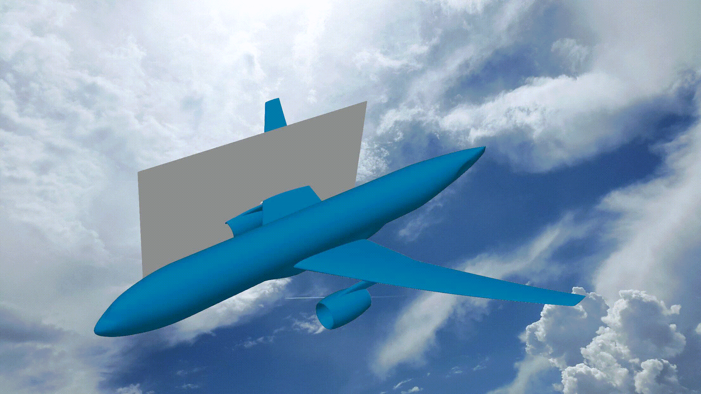
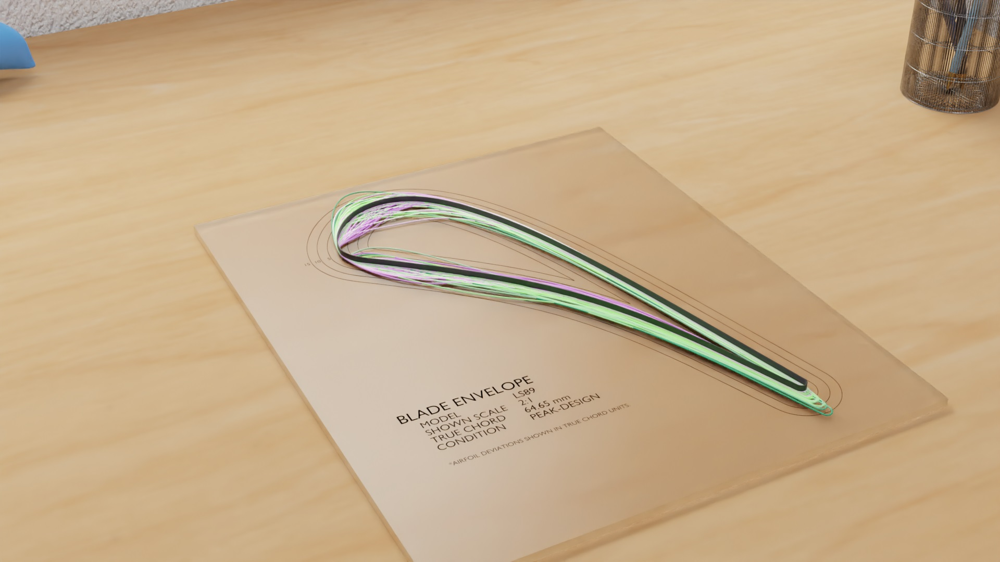

Pushing the envelope in computational mathematics and machine learning. Focusing on uncertainty quantification, dimension reduction, numerical integration, and everything to do with polynomials. We build tools that work their way into equadratures.
research areas
latest work

Polynomial ridge flowfield estimation
Ashley Scillitoe, Pranay Seshadri, Chun Yui Wong, Andrew B. Duncan
Physics of Fluids 2021.
Physics of Fluids 2021.
Recently, there has been increasing interest in data-driven methods, in order to exploit the large volume of data generated by such computations. This paper introduces the idea of using spatially correlated polynomial ridge functions for rapid flowfield estimation. Dimension reducing ridge functions are obtained for numerous points within training flowfields. The functions can then be used to predict flow variables for new, previously unseen, flowfields. Their dimension reducing nature alleviates the problems associated with visualising high dimensional datasets, enabling improved understanding of design spaces and potentially providing valuable physical insights.
The proposed framework is computationally efficient; consisting of either readily parallelisable tasks, or linear algebra operations. To further reduce the computational cost, ridge functions need only be computed at only a small number of subsampled locations. The flow physics encoded within covariance matrices obtained from the training flowfields can then be used to predict flow quantities, conditional upon those predicted by the ridge functions at the sampled points.

Blade envelopes
Chun Yui Wong, Pranay Seshadri, Ashley Scillitoe, Bryn Ubald, Andrew B. Duncan, Geoff T. Parks
ASME Journal of Turbomachinery 2021.
ASME Journal of Turbomachinery 2021.
Blades manufactured through flank and point milling will likely exhibit geometric variability. Gauging the aerodynamic repercussions of such variability, prior to manufacturing a component, is challenging enough, let alone trying to predict what the amplified impact of any in-service degradation will be. While rules of thumb that govern the tolerance band can be devised based on expected boundary layer characteristics at known regions and levels of degradation, it remains a challenge to translate these insights into quantitative bounds for manufacturing. In this work, we tackle this challenge by leveraging ideas from dimension reduction to construct low-dimensional representations of aerodynamic performance metrics. These low-dimensional models can identify a subspace which contains designs that are invariant in performance -- the inactive subspace. By sampling within this subspace, we design techniques for drafting manufacturing tolerances and for quantifying whether a scanned component should be used or scrapped.